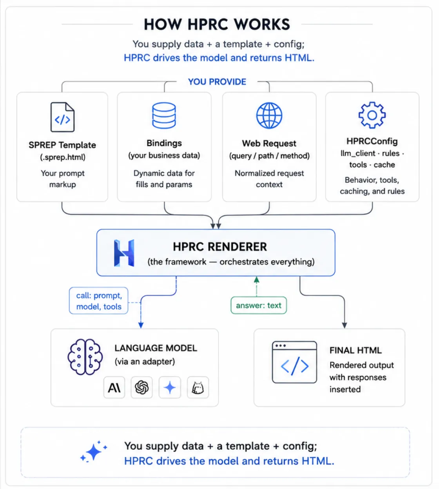
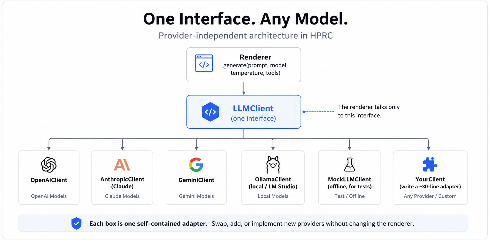
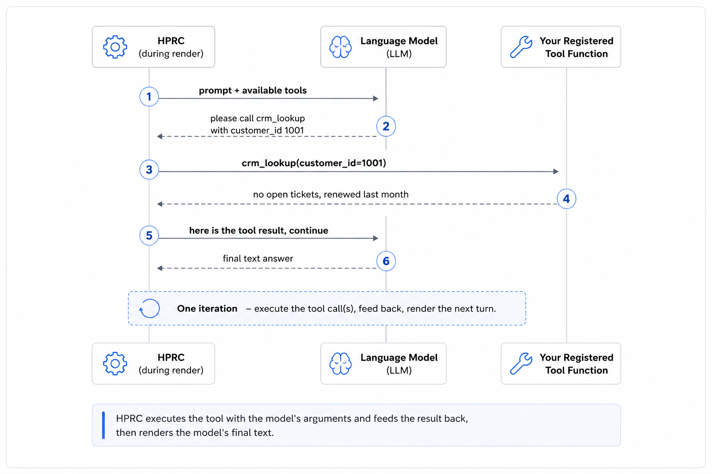

Architecture & Design
How HPRC works
A guided tour of the framework: what you provide, what HPRC does for you, how a page is rendered, and how the pieces fit together.
1 · The big picture
HPRC turns a SPREP template — an HTML page with embedded
<prompt> and <response> elements — into finished
HTML, running the prompts through a language model along the way. There are two roles:
- You (the application): write the template, supply your data and a little configuration, and call the renderer.
- HPRC (the framework): does all the orchestration — resolving data, deciding which prompts run and in what order, calling the model, caching, and assembling the final HTML.

You supply data + a template + config; HPRC drives the model and returns HTML.
The key inversion: instead of writing Python that builds prompt strings and splices
model output into a page, you put the prompts in the page and let HPRC run them.
The <prompt> blocks are tacit — they execute but never
appear in the output; only their <response> answers do.
2 · Who provides what
You provide a handful of clearly-separated things; HPRC handles the rest. The most
important one for newcomers is bindings — the plain dictionary of your own
data that becomes available to both the page and the prompts.
| Piece | Who provides it | What it is / what it's for |
|---|---|---|
| SPREP template ( .sprep.html) |
You (the page author) | The HTML page with <prompt> (what to ask), <response> (where the answer goes), and <fill> (where data goes). |
bindings(your data) |
You (your Python code) | A plain dictionary your business logic produces — e.g. {"customer": {"age": 55}}. Read in both the HTML and the prompts via <fill>customer.age</fill>. This is how your own data gets into a page. |
| The web request | Your web framework | The incoming request (query string, path params, method). HPRC normalizes it into a request.* namespace, read via <fill>request.query.product</fill> or the shortcut <param>product</param>. |
| Model & settings | You (in the template) | Per prompt: model, temperature, max_tokens — written as attributes on each <prompt>. |
| Rules (who gets what) |
You (Python functions) | Named yes/no functions registered in HPRCConfig.rules. A prompt references one by name in condition="is_premium_customer" to decide whether it runs. The logic lives in Python, not the template. |
| Tools (extra abilities) |
You (Python functions) | Named callables registered in HPRCConfig.tools. A prompt lists the ones it's allowed to use in tools="crm_lookup"; HPRC passes those to the model. |
| LLM client (the model adapter) |
You (in HPRCConfig) |
The object that actually talks to a model provider. HPRC ships ready-made ones (OpenAI, Claude, Gemini, local, mock) — see §4. |
| Cache | You (in HPRCConfig) |
Where prompt responses are stored to avoid repeat model calls. Defaults to an in-memory cache; pluggable (e.g. Redis). |
| Everything else | HPRC | Parsing, deciding which prompts run, working out their order, running them, caching, and assembling the final HTML — you don't write any of this. |
3 · Inside one render (the internal mechanism)
You don't call these steps. You call one function —
render_template(...) — and HPRC runs the pipeline below internally. It's
documented here so you understand how a page is produced, not because you
invoke any of it directly.

One render pass, start to finish. Steps 4–6 are what remove the need for hand-written orchestration.
- Parse — read the template into a tree and find every
<prompt>and<response>. Ordinary HTML is kept as-is. - Normalize the request — turn whatever request object your web
framework passed (or a plain dict) into a uniform
request.*namespace. - Evaluate rules — for each prompt that has a
condition, run the named Python rule. If it returns false, that prompt is skipped entirely. - Build a dependency graph — a prompt that pulls in another's answer
(
<include response="X"/>) depends on it. HPRC discovers these links automatically; you never sequence prompts by hand. - Order into levels — group prompts so that everything in a level is independent. Levels run in order; a cycle is reported as an error.
- Run each prompt — fill in its data (
<fill>,<param>,<include>), look in the cache, and if needed call the model through the adapter. Prompts are sequential by default;async="yes"opts them into concurrency within a level. - Serialize — walk the page and emit the final HTML: drop the
<prompt>blocks, insert each answer at its<response>, and fill remaining<fill>/<param>values (HTML-escaped).
The renderer (hprc/renderer.py) coordinates all of this; everything passing
through it is plain data described in hprc/models.py.
4 · LLM adapters (works with any provider)
HPRC never hard-codes a model vendor. Every provider is reached through one small
interface — LLMClient — with a single method, generate(...).
The renderer only ever calls that method, so it doesn't know or care which provider is
behind it.
Ready-made adapters ship for the common providers; you can write your own for anything else.

Each box is one self-contained adapter. The renderer talks only to the interface.
| Adapter (shipped) | Talks to | Install extra |
|---|---|---|
OpenAIClient | OpenAI (GPT models) | pip install "hprc-framework[openai]" |
AnthropicClient | Anthropic (Claude) | …[anthropic] |
GeminiClient | Google (Gemini) | …[gemini] |
OllamaClient | local models (Ollama / LM Studio) | — (OpenAI-compatible) |
MockLLMClient | nothing — deterministic offline echo | — (built in) |
MultiProviderClient | routes to several of the above by a "provider:model" prefix | — |
You pick one when you build the config — that fixes the provider; a prompt's
model="…" then selects the specific model within it:
from hprc import HPRCConfig, OpenAIClient, AnthropicClient, GeminiClient
HPRCConfig(llm_client=OpenAIClient(api_key=...)) # GPT
HPRCConfig(llm_client=AnthropicClient(api_key=...)) # Claude
HPRCConfig(llm_client=GeminiClient(api_key=...)) # GeminiWriting an adapter for another provider
Subclass LLMClient and implement one method: take HPRC's standard inputs,
call the vendor's API, return the text. Lazy-import the SDK so HPRC keeps no hard
dependency on it. Nothing else in HPRC changes.
from hprc import LLMClient
class MyProviderClient(LLMClient):
def __init__(self, api_key, default_model="my-model-1"):
self._api_key, self._default, self._client = api_key, default_model, None
def _get_client(self):
if self._client is None:
from myprovider import AsyncClient # imported only when used
self._client = AsyncClient(api_key=self._api_key)
return self._client
async def generate(self, prompt, model=None, temperature=None,
max_tokens=None, tools=None) -> str:
resp = await self._get_client().complete(
model=model or self._default, input=prompt,
temperature=temperature, max_tokens=max_tokens,
)
return resp.text # return the model's text
# then: HPRCConfig(llm_client=MyProviderClient(api_key=...))The contract every adapter must satisfy (request mapping + text extraction) is exercised
by tests/test_providers.py against fake SDKs — copy a case for your adapter.
5 · Tools — the model can call your functions
Tools let a prompt give the model abilities it can call while the page renders — look something up, run a calculation, hit an API. The current architecture supports a single tool iteration: the model may request one or more tool calls, HPRC executes them and feeds the results back, and the model's next response is rendered. (A multi-step / agent loop is on the roadmap.)
How you wire tools
Register the actual functions by name in your config, and list which ones a prompt may use:
def crm_lookup(customer_id: str) -> str: # a normal Python function
return "no open tickets, renewed last month"
config = HPRCConfig(tools={"crm_lookup": crm_lookup}) # name -> function
# in the template, a prompt allow-lists the tools it may call:
# <prompt id="summary" tools="crm_lookup"> … </prompt>How the loop runs (during the render)
When a prompt declares tools, HPRC calls the model with the prompt + the tool schemas (each adapter maps them to that vendor's format). Then:

HPRC executes the tool with the model's arguments and feeds the result back, then renders the model's final text.
- If the model just answers (no tool call), that text is the response — one model call, done.
- If the model calls one or more tools, HPRC runs your registered function(s) with the arguments the model supplied, returns the result(s), and asks the model once more — that next response is the answer. This is a single iteration of tool execution.
- If the model is still calling a tool after that iteration, HPRC renders nothing for that prompt (an empty response) rather than show a half-finished turn.
Details worth knowing
- Allow-list enforced: a prompt can only call the tools it lists. If the model asks for one that isn't allowed, HPRC returns an error string to the model (it can recover) rather than execute it.
- No caching: tool-executing prompts are not cached, since tool outputs are dynamic.
- Provider support: implemented for
OpenAIClient(andOllamaClient) andAnthropicClient.GeminiClientforwards tool schemas but its execution loop isn't implemented yet (it falls back to a single text generation). - Single iteration, not an agent: HPRC runs exactly one round of tool execution per prompt — it does not keep looping. A multi-step agent loop and MCP support are on the roadmap.
Why bounded — render-time vs. live. HPRC's renderer is synchronous: a request comes in, the page is produced, and the HTML is returned. That render must terminate quickly and predictably — you can't return a page while a loop is still running, and an unbounded agent in the render path would blow up latency, timeouts, and server load. So the render path stays bounded (fills, prompts, a single tool iteration). Anything long-running — a widget that keeps making model/tool calls in real time — belongs to a separate execution model (a "live region" streamed over SSE/WebSocket after the page is sent), not the renderer. Those future tracks — a bounded multi-step agent loop, live/streaming regions, and progressive render — are recorded in the project roadmap.
6 · Design principles (and why they matter)
No code or expressions in templates
A SPREP template can't contain logic — there are no if statements, no
expressions, no function calls. When the page needs a decision ("only run this prompt
for premium customers"), the template just names a rule
(condition="is_premium_customer") and you define that rule as a Python
function. Tools work the same way: the template lists allowed names; the actual
functions live in your app. Why: templates stay simple and safe to read
or hand to a designer, and your business logic stays in Python where it can be tested.
A single tool iteration, not an agent
When a prompt lists tools, HPRC executes the ones the model calls in one iteration, feeds the results back, and renders the model's next response — it does not keep looping (see §5). It is not an autonomous agent. Why: every render terminates predictably and you stay in control. A multi-step agent loop and MCP are on the roadmap.
Layered code with no cycles
The library is organized in layers that only depend downward, so there are no circular
dependencies. At the bottom are plain data structures (models.py). Small,
independent services sit on top — the parser, cache, rules, tools, and the provider
adapters — and each depends only on those data structures, not on each other. The
renderer is the single coordinator that ties them together.
Why: every piece is easy to understand, test, and swap out on its own
(you can replace the cache or add a provider without touching the renderer).
7 · Module layout
Arrows point from a module to what it depends on. Notice that everything ultimately rests on the data models, and only the renderer wires the services together.
flowchart TD
INIT["__init__.py
(public API)"] --> REN
REN["renderer.py
orchestrator"] --> CFG["config.py
HPRCConfig"]
REN --> PAR["parser.py"]
REN --> DG["dependency_graph.py"]
REN --> RUL["rules.py"]
REN --> RC["request_context.py"]
REN --> TLS["tools.py"]
REN --> CA["cache.py"]
CFG --> LLM["llm.py
(adapters)"]
CFG --> CA
CFG --> TLS
PAR --> MOD["models.py
(pure data)"]
DG --> MOD
LLM --> MOD
TLS --> MOD
CA --> MOD
RC --> MOD
Data models at the base · leaf services in the middle · the renderer on top.
8 · Worked example — two dependent prompts
A customer page that (1) summarizes the account, but only for premium customers, and (2) suggests an upsell based on that summary. The second prompt includes the first's answer, so HPRC runs them in order automatically.
<prompt id="summary" model="gpt-4o" condition="is_premium_customer"
cache="24h" tools="crm_lookup">
You are a concise account analyst. In two sentences, summarize this customer's
account and flag anything notable.
Name: <fill>customer.name</fill> · Tier: <fill>customer.tier</fill>
Balance: <fill>account.balance</fill> · Last order: <fill>account.last_order</fill>
</prompt>
<prompt id="upsell" model="gpt-4o">
Based on this account summary:
<include response="summary"/>
Recommend exactly one upsell relevant to "<param>product</param>", in one sentence.
</prompt>
<section><h2>Account summary</h2><response id="summary"/></section>
<section><h2>Suggested next step</h2><response id="upsell"/></section>Dependency graph: summary → upsell. (If the model decides to call
crm_lookup, HPRC executes it and feeds the result back before producing the
summary — see §5.) Here is what happens at render time:
sequenceDiagram
autonumber
participant App as Your app
participant R as HPRC Renderer
participant Rule as is_premium_customer
participant LLM as LLM adapter
App->>R: render_template(template, bindings, request, config)
R->>Rule: does this customer qualify?
Rule-->>R: yes → run "summary"
Note over R: order = summary, then upsell (upsell includes summary)
R->>LLM: generate(summary prompt, model=gpt-4o, tools=[crm_lookup])
LLM-->>R: "Premium account in good standing; large order last week."
R->>LLM: generate(upsell prompt, with the summary text embedded)
LLM-->>R: "Suggest the Pro plan to match their growing usage."
R-->>App: final HTML — prompts removed, both answers inserted
HPRC discovered the order from the include — you never sequenced the calls.
Had a third, independent prompt been present, it could share summary's level
and (with async="yes") run at the same time.
Roadmap
The render path stays synchronous and bounded; these are the planned
additions, grouped by theme. Recently shipped: provider adapters, single-iteration
tool execution, response gathering, and the context → bindings rename.
Tooling & MCP
- A multi-step (bounded) agent loop — beyond today's single tool iteration.
- MCP (Model Context Protocol) integration — discover & execute MCP tools via the same allow-list.
- Gemini tool execution; tool results as embeddable content.
Conversational / multi-turn app owns persistence
prior_context— pass in an existing message chain (roles preserved).<system>role — a system-message directive prepended to prompt calls.RenderResult.messages— return the turns so the app can persist history and replay it. HPRC itself stays stateless.
Response shaping
- Structured output → fills — a prompt returns JSON whose fields fill many placeholders (
<fill>card.title</fill>); the template owns layout, values stay escaped. formatattribute —text(safe default),markdown(→ sanitized HTML),html(sanitized, opt-in).<each>— iteration for rendering lists.
Data composition
- Raw/trusted HTML injection (
<fill raw>+ sanitizer). - Async data providers in the dependency graph (DB/API fetches running alongside prompts).
retrieved_context(RAG) + a retriever seam.
Execution models — render-time vs. live
- Live regions / real-time widgets — a separate post-render model: the render emits a placeholder + client hook, and a companion endpoint runs the loop and streams updates (SSE/WebSocket). See the §5 callout for why this stays off the render path.
- Progressive / streaming render — flush each
<response>as it completes.
Naming taxonomy (adopted): bindings = page data ·
prior_context = conversation · retrieved_context = RAG ·
request = the web request. Principle: *_context feeds the
model's context window; bindings is page data.
Source map
| File | Responsibility |
|---|---|
hprc/models.py | Plain data structures (parsed template, prompt/response definitions, render bindings). |
hprc/parser.py | Turn template text into that data; find prompts/responses; validate. |
hprc/request_context.py | Normalize the web request; resolve dotted paths like customer.age. |
hprc/rules.py | Look up and run named rules (no expressions in templates). |
hprc/dependency_graph.py | Find include links, build the graph, order into levels. |
hprc/tools.py | Resolve allow-listed tool names to registered functions. |
hprc/cache.py | TTL parsing, cache keys, in-memory cache (pluggable). |
hprc/llm.py | The LLMClient interface and the shipped adapters. |
hprc/config.py | HPRCConfig — bundles client, rules, tools, cache. |
hprc/renderer.py | The orchestrator + the public render_* entry points. |